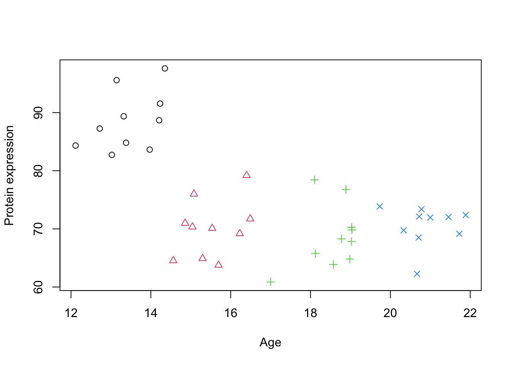
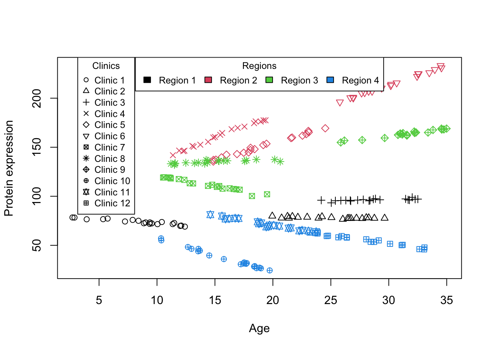
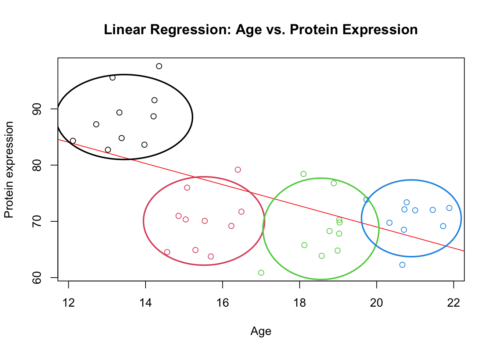

Code
rm(list=ls())
library("tidyverse")
library("lme4")
library("emmeans")
library("performance")
library("ggiraphExtra")This notebook shows fitting some of the common examples of linear mixed models, including models with random intercept, random intercept and slope, nested design, and crossed design. The examples are based on the simulated data with a grouped trend, nested trend and crossed trend and implemented in R using the lme4 package.
In try it yourself section, you can find instructions to practice the linear mixed models on some other data sets.
More details can be found under https://payamemami.com/linear_mixed_models/
rm(list=ls())
library("tidyverse")
library("lme4")
library("emmeans")
library("performance")
library("ggiraphExtra")# grouped trend
simulate_grouped_trend <- function(group_count = 5, points_per_group = 10, global_slope = -10, global_intercept = 30, group_slope = 2, noise_sd = 50) {
set.seed(123) # Setting a seed for reproducibility
# Initialize an empty data frame to store the simulated data
data <- data.frame(x = numeric(), y = numeric())
# Loop to create each group
for (i in 1:group_count) {
x_start <- 12 + (i - 1) * (10 / group_count) # Stagger the start of x for each group
x <- runif(points_per_group, min = x_start, max = x_start + (10 / group_count))
# Apply a local positive trend within the group, but maintain the global negative trend
local_intercept <- global_intercept + global_slope * (x_start + (10 / (2 * group_count))) + rnorm(1, mean = 0, sd = noise_sd)
y <- local_intercept + group_slope * (x - x_start) + rnorm(points_per_group, mean = 0, sd = noise_sd)
# Combine this group with the overall dataset
group_data <- data.frame(x = x, y = y,group=i)
data <- rbind(data, group_data)
}
return(data)
}
# generate simulated data
data_int <- simulate_grouped_trend(group_count = 4,points_per_group = 10,global_slope = -2,global_intercept = 100,group_slope = 4,noise_sd = 5)
# set group to factor
data_int$group <- factor(data_int$group)
# nested trend
simulate_grouped_trend_nested <- function(region_count = 3, clinics_per_region = 5, measurements_per_clinic = 10,
global_slope = -10, global_intercept = 30,
region_effects = c(), region_slopes = c(),
clinic_effects = list(), clinic_slopes = list()) {
set.seed(123) # Setting a seed for reproducibility
# Initialize an empty data frame to store the simulated data
data <- data.frame(x = numeric(), y = numeric(), clinic = integer(), region = integer())
clinic_id_counter = 1 # Initialize a counter for clinic IDs across regions
# Loop to create data for each region
for (region in 1:region_count) {
# Use the specific region effect and slope
region_effect_adj = region_effects[region]
region_slope_adj = region_slopes[region]
# Loop to create data for each clinic within a region
for (clinic in 1:clinics_per_region) {
x_start = runif(1, min = 0, max = 10) + 10 * (clinic - 1) # More continuous x values across clinics
x = runif(measurements_per_clinic, min = x_start, max = x_start + 10) # Continuous x for measurements
# Use the specific clinic effect and slope
clinic_effect = clinic_effects[[region]][clinic]
clinic_slope = clinic_slopes[[region]][clinic]
# Simulate measurements for each clinic
for (i in 1:measurements_per_clinic) {
# Model y incorporating both global and specific slopes and effects
y = (global_intercept + region_effect_adj + clinic_effect) +
(global_slope + region_slope_adj + clinic_slope) * x[i] +
rnorm(1, mean = 0, sd = 1) # Assuming measurement_noise_sd is constant for simplicity
# Combine this measurement with the overall dataset
data = rbind(data, data.frame(x = x[i], y = y, clinic = clinic_id_counter, region = region))
}
clinic_id_counter <- clinic_id_counter + 1 # Increment clinic ID for unique identification across regions
}
}
return(data)
}
set.seed(10)
data_int_nested <-simulate_grouped_trend_nested(region_count = 4,
clinics_per_region = 3,
measurements_per_clinic = 20,
global_slope = 0,global_intercept = 100,
region_effects = rnorm(4,mean = 0,sd = 20),
region_slopes=rnorm(4,mean = 0.1,sd = 2),
clinic_effects = lapply(1:4,function(i){rnorm(3,mean = 0,sd = 10)}),
clinic_slopes = lapply(1:4,function(i){rnorm(3,mean = 0.1,sd = 1)}))
# crossed trend
simulate_grouped_trend_crossed <- function(clinic_count = 3, doctor_count = 5, measurements_per_combination = 10,
global_slope = -10, global_intercept = 30,
clinic_effects = c(), clinic_slopes = c(),
doctor_effects = c(), doctor_slopes = c()) {
set.seed(123) # Setting a seed for reproducibility
# Initialize an empty data frame to store the simulated data
data <- data.frame(x = numeric(), y = numeric(), doctor = integer(), clinic = integer())
# Validate or adjust lengths of effects and slopes arrays to match counts
if (length(clinic_effects) != clinic_count) clinic_effects <- rep(clinic_effects[1], clinic_count)
if (length(clinic_slopes) != clinic_count) clinic_slopes <- rep(clinic_slopes[1], clinic_count)
if (length(doctor_effects) != doctor_count) doctor_effects <- rep(doctor_effects[1], doctor_count)
if (length(doctor_slopes) != doctor_count) doctor_slopes <- rep(doctor_slopes[1], doctor_count)
# Loop to create data for each combination of clinic and doctor
for (clinic in 1:clinic_count) {
for (doctor in 1:doctor_count) {
x_start = runif(1, min = 0, max = 10) # Continuous x values
x = runif(measurements_per_combination, min = x_start, max = x_start + 10) # Continuous x for measurements
# Use the specific effect and slope for the current clinic and doctor
clinic_effect_adj = clinic_effects[clinic]
clinic_slope_adj = clinic_slopes[clinic]
doctor_effect = doctor_effects[doctor]
doctor_slope = doctor_slopes[doctor]
# Simulate measurements for each combination of clinic and doctor
for (i in 1:measurements_per_combination) {
# Model y incorporating both global and specific slopes and effects
y = (global_intercept + clinic_effect_adj + doctor_effect) +
(global_slope + clinic_slope_adj + doctor_slope) * x[i] +
rnorm(1, mean = 0, sd = 1) # Assuming measurement_noise_sd is constant for simplicity
# Combine this measurement with the overall dataset
data = rbind(data, data.frame(x = x[i], y = y, doctor = doctor, clinic = clinic))
}
}
}
return(data)
}
data_int_crossed<-simulate_grouped_trend_crossed(clinic_count = 4,
doctor_count = 3,
measurements_per_combination = 20,
global_slope = 1,global_intercept = 100,
clinic_effects =c(1,20,40,60),
clinic_slopes=c(1,1.5,0.9,1.1),
doctor_effects = c(1.3,1.2,2),
doctor_slopes = c(-3,1,2))# plot the data
plot(data_int$x,data_int$y,xlab="Age",ylab="Protein expression",col=data_int$group,pch=as.numeric(data_int$group))
plot(data_int_nested$x,data_int_nested$y,col=data_int_nested$region,pch=data_int_nested$clinic,xlab = "Age",ylab = "Protein expression")
legend("top", legend = paste("Region", unique(data_int_nested$region)),
fill = unique(data_int_nested$region), cex = 0.8, title = "Regions",horiz=T)
legend("topleft", legend = paste("Clinic", unique(data_int_nested$clinic)),
pch = unique(data_int_nested$clinic), col = "black", cex = 0.8, title = "Clinics", inset = c(0.05, 0))
plot(data_int_crossed$x,data_int_crossed$y,col=data_int_crossed$clinic,pch=data_int_crossed$doctor,xlab = "Age",ylab = "Protein expression")
legend("top", legend = paste("Clinic", unique(data_int_crossed$clinic)),
fill = unique(data_int_crossed$clinic), cex = 0.8, title = "Clinics",horiz=T)
legend("topleft", legend = paste("Doctor", unique(data_int_crossed$doctor)),
pch = unique(data_int_crossed$doctor), col = "black", cex = 0.8, title = "Doctors", inset = c(0.05, 0))
Let’s fit a simple regression to model the protein expression as a function of age.
# fit model
model <- lm(y ~ x, data = data_int)
# print model summary
print(summary(model))
##
## Call:
## lm(formula = y ~ x, data = data_int)
##
## Residuals:
## Min 1Q Median 3Q Max
## -14.7166 -6.2725 0.7094 5.0500 17.9565
##
## Coefficients:
## Estimate Std. Error t value Pr(>|t|)
## (Intercept) 106.6762 7.2948 14.62 < 2e-16 ***
## x -1.8836 0.4204 -4.48 6.63e-05 ***
## ---
## Signif. codes: 0 '***' 0.001 '**' 0.01 '*' 0.05 '.' 0.1 ' ' 1
##
## Residual standard error: 7.761 on 38 degrees of freedom
## Multiple R-squared: 0.3457, Adjusted R-squared: 0.3285
## F-statistic: 20.07 on 1 and 38 DF, p-value: 6.627e-05
# visualize data and fitted model
plot(data_int$x, data_int$y, xlab="Age", ylab="Protein expression", main="")
abline(model, col="red") # Add the regression line in redThe intercept, estimated at 106.6762, represents the expected Protein expression when Age is zero. Although having an age of zero is not meaningful in this context, the intercept gives us a starting reference point for the model.
The slope coefficient for Age (x) is -1.8836, indicating that for each one-unit increase in Age, Protein expression is expected to decrease by approximately 1.88 units. This negative association is significant, as indicated by the p-value of 6.63e-05, which is much lower than the conventional threshold of 0.05 for statistical significance.
The standard error of the estimate for the slope tells us the average amount that the coefficient estimates vary from the actual average value of our response variable. Here, the standard error for the slope is 0.4204, which is relatively small compared to the estimate itself, suggesting a precise estimate of the slope. So we are pretty confident in what we have estimated. However, while the regression line provides a clear visual indication of the overall trend, it does not account for the potential clustering of data points.
When we look more closely we can see four different clusters of the data. While the global pattern seems decreasing as seen above in the simple linear regression, the local pattern per cluster of data increases with Age.
# Plot the data with different colors for each group
plot(data_int$x, data_int$y, xlab="Age", ylab="Protein expression", main="Linear Regression: Age vs. Protein Expression", col=data_int$group)
# Add a linear regression line
abline(lm(y ~ x, data = data_int), col="red")
# Function to draw ellipse
draw_ellipse <- function(x, y, level = 0.95, col){
# Calculate the means of x and y
xbar <- mean(x)
ybar <- mean(y)
# Calculate the standard deviations
std_x <- sd(x)*2
std_y <- sd(y)*2
# Calculate the correlation
correlation <- cor(x, y)
# Create a sequence of angles
t <- seq(0, 2*pi, length.out = 100)
# Calculate the ellipse points
a <- std_x * sqrt(1 + correlation)
b <- std_y * sqrt(1 - correlation)
ellipse_x <- xbar + a * cos(t)
ellipse_y <- ybar + b * sin(t)
# Draw the ellipse
lines(ellipse_x, ellipse_y, col=col, lwd=2)
}
# Draw ellipses for each group
unique_groups <- unique(data_int$group)
colors <- rainbow(length(unique_groups))
for (group in unique_groups) {
group_data <- data_int[data_int$group == group, ]
draw_ellipse(group_data$x, group_data$y, col=group)
}
More precisely, there is a positive trend in each of the clusters that has not been captured by the simple regression model. Instead the model focused on the global pattern. We can fit single model for each of the group to try to account for the fact that the Protein expression adn Age are correlated within each cluster. This approach may be valid especially when we do not have many groups and we have enough data in each of the groups. Let’s add Group as covariate in a multiple regression model.
# Fit a linear regression model
data_int$group <- as.factor(data_int$group)
model_cov <- lm(y ~ x+group, data = data_int)
print(summary(model_cov))
Call:
lm(formula = y ~ x + group, data = data_int)
Residuals:
Min 1Q Median 3Q Max
-7.7577 -3.2657 -0.1872 1.4925 10.7686
Coefficients:
Estimate Std. Error t value Pr(>|t|)
(Intercept) 58.798 15.341 3.833 0.000505 ***
x 2.213 1.136 1.949 0.059406 .
group2 -23.072 3.133 -7.364 1.30e-08 ***
group3 -31.187 6.159 -5.064 1.32e-05 ***
group4 -34.509 8.716 -3.959 0.000351 ***
---
Signif. codes: 0 '***' 0.001 '**' 0.01 '*' 0.05 '.' 0.1 ' ' 1
Residual standard error: 4.625 on 35 degrees of freedom
Multiple R-squared: 0.786, Adjusted R-squared: 0.7615
F-statistic: 32.13 on 4 and 35 DF, p-value: 2.832e-11# Get the predictions
data_int$predicted <- predict(model_cov)
# Plotting
plot(data_int$x, data_int$y, xlab="Age", ylab="Protein expression", pch=19, col=data_int$group)
# Add predicted lines
for(i in seq_along(unique(data_int$group))){
group_subset <- data_int[data_int$group == unique_groups[i], ]
lines(group_subset$x, group_subset$predicted, col = i, lwd = 2)
}Starting with the intercept, which is 58.798, this tells us the expected value of y when x is at 0 and when we are considering the baseline group (group1). It is like saying, “If we do not move x and if we are looking at group1, y would be around 58.798.”
Next, we have the coefficient for x, which is 2.213. This number shows how y changes with a one-unit increase in x, across all groups. It is an universal slope, implying that regardless of which group we are looking at, if x goes up by one, y tends to increase by about 2.213 units, holding everything else constant.
Now, the interesting part - the different intercepts for each group beyond the first. The coefficients for group2 (-23.072), group3 (-31.187), and group4 (-34.509) adjust the baseline level of y for each group compared to group1. What this means is that if we are in group2 and x is 0, y is expected to be 23.072 units lower than the baseline of group1. Similarly, for group3 and group4, y would be 31.187 and 34.509 units lower than group1’s baseline, respectively, when x is 0.
These differences highlight that our groups have unique starting points for y, which are not explained by x alone. There are underlying characteristics or conditions specific to each group that affect y, independent of x. By including these group differences in our model, we can accurately capture the unique relationship between x and y for each group, showing that not every group begins from the same place.
Having explored how different groups can have unique starting points or intercepts in our model, it is natural to wonder if the relationship between x and y—our slope—might also vary across these groups. Until now, we have assumed that a one-unit increase in x has the same impact on y for all groups. But what if this is not the case? What if the effect of x on y is stronger for some groups than for others?
To explore this possibility, we introduce the concept of interaction terms in our model, where we can look at how the effect of x on y might change depending on the group.
# Fit a linear regression model
data_int$group <- as.factor(data_int$group)
model_cov <- lm(y ~ x*group, data = data_int)
print(summary(model_cov))
Call:
lm(formula = y ~ x * group, data = data_int)
Residuals:
Min 1Q Median 3Q Max
-8.2809 -2.8341 -0.1584 1.6500 11.0307
Coefficients:
Estimate Std. Error t value Pr(>|t|)
(Intercept) 46.9913 28.9624 1.622 0.115
x 3.0911 2.1511 1.437 0.160
group2 -18.8314 46.6833 -0.403 0.689
group3 -30.0940 53.5919 -0.562 0.578
group4 24.0594 58.6931 0.410 0.685
x:group2 -0.3905 3.1914 -0.122 0.903
x:group3 -0.3006 3.2446 -0.093 0.927
x:group4 -3.1154 3.2539 -0.957 0.346
Residual standard error: 4.755 on 32 degrees of freedom
Multiple R-squared: 0.7931, Adjusted R-squared: 0.7479
F-statistic: 17.53 on 7 and 32 DF, p-value: 2.613e-09# Get the predictions
data_int$predicted <- predict(model_cov)
# Plot
plot(data_int$x, data_int$y, xlab="Age", ylab="Protein expression", main="Linear Regression: Age vs. Protein Expression", pch=19, col=data_int$group)
# Add predicted lines
for(i in seq_along(unique(data_int$group))){
group_subset <- data_int[data_int$group == unique_groups[i], ]
lines(group_subset$x, group_subset$predicted, col = i, lwd = 2)
}This model allows x to have a different slope for each group, providing a richer understanding of our data. It is a step towards uncovering more complex patterns and interactions that might exist, shedding light on the nuanced ways in which our variables interplay. This model allows x to have a different slope for each group, providing a richer understanding of our data. It’s a step towards uncovering more complex patterns and interactions that might exist, shedding light on the nuanced ways in which our variables interplay.
The interaction terms in our new model model_cov <- lm(y ~ x*group, data = data_int) reveal yet another layer of complexity. Now, not only do we recognize that each group starts at a different point, but we also see that the relationship between x and y—how y changes as x increases—is not a one-size-fits-all across the groups.
Now, let’s interpret the coefficients:
(Intercept) 46.9913: This is the expected protein expression when age is zero for the baseline group (group1).
x 3.0911: This coefficient represents the slope of the line for the baseline group. For each additional year of age, the protein expression is expected to increase by 3.0911 units for group1.
group2 -18.8314: This coefficient adjusts the intercept for group2. So, the expected starting point for protein expression in group2, when age is zero, is 46.9913 (the baseline intercept) minus 18.8314, giving us a starting point of 28.1599.
group3 -30.0940: Similarly, for group3, the expected starting point for protein expression when age is zero is 46.9913 minus 30.0940, resulting in 16.8973.
group4 24.0594: For group4, the expected starting point is 46.9913 plus 24.0594, which is 71.0507, indicating that group4 has a higher starting point than group1.
x:group2 -0.3905: This is the interaction term for age and group2, indicating how the slope for group2 differs from the baseline group’s slope. The slope for group2 is 3.0911 (baseline slope) minus 0.3905, which is approximately 2.7006. This suggests that for group2, for each additional year of age, the protein expression increases by about 2.7006 units, which is less than the increase for group1.
x:group3 -0.3006: For group3, the slope is 3.0911 minus 0.3006, approximately 2.7905. So the rate of increase in protein expression per year of age for group3 is slightly less than for group1 but not as much less as for group2.
x:group4 -3.1154: This interaction term indicates a significant change in the slope for group4 compared to group1. The slope for group4 is 3.0911 minus 3.1154, which is approximately -0.0243. This would suggest a slight decrease in protein expression with age for group4, which is contrary to the positive association seen in the other groups.
The interaction terms, specifically the coefficients for x:group2, x:group3, and x:group4, tell us just how much the slope of the relationship between x and y differs for each group compared to our baseline group1. For example, group2 has a slightly lesser slope than group1, indicating that as x increases, y increases but not as rapidly as in group1. Group3 follows a similar pattern, albeit the difference is more modest.
Most intriguing is group4, where the interaction term is quite pronounced, suggesting that the increase in y with x is significantly less for group4 compared to group1 in fact, it’s almost negligible, indicating a nearly flat line. This could mean that for individuals in group4, changes in x do not translate into changes in y as they do for the other groups.
What we just saw was a simple example of how to handle clustered data in a simple linear regression. Without accounting for these cluster-related differences, the assumption of independence among observations—a cornerstone of linear regression—is violated, as the outcome within a cluster are inherently correlated. This correlation persists even when attempting to control for the cluster’s effect, due to other unobservable factors.
The consequence of ignoring cluster-level effects might lead to incorrect inferences, as standard errors are usually underestimated, making them appear more precise than they actually are. While the regression coefficients themselves might remain unbiased, the underestimation of standard errors can falsely enhance the significance of findings. Furthermore, we often ten to overestimate the degrees of freedom leading to inflated p-values.
Addressing this issue often involves introducing indicator variables (similar to what we have done above) to account for cluster effects, allowing for different intercepts or even slope for each cluster. However, this approach becomes impractical with a large number of clusters or when dealing with longitudinal data. Furthermore, we might not even be interested in modeling clusters parameters, we are just interested in some specific questions. Think about the simple dataset we just analyzed, the main effect of interest was Age, however, we had to estimate a lot more parameters in the model to account for the cluster effect. More specifically, in lm(y~x+group) we estimate five parameters and in lm(y~x*group,data_int) we had eight parameters while we basically needed two. These parameters are all degrees of freedom that we spend while we might not even be interested in the cluster level parameters. Now imagine we might have hundreds of nested clustered with limited data, such modeling attempt will quickly become unfeasible and may lead to overfitting. In such cases, the model would consume degrees of freedom excessively, reducing the power of statistical tests and potentially leading to unreliable estimates due to the curse of dimensionality. Moreover, with a high number of parameters relative to the number of observations, standard errors of the estimates increase, which can make the model’s predictions less precise.
To address these issues, we often resort to mixed-effects models.
Now it is time to use mixed model approach to model Protein expression. Let’s say that each group is a random clinic that we decided to get some sample from. So we now have identified the grouping structure in our data that might influence the effect of interest (Age).
What we believe is that the effect of Age on the Protein expression is constant in each of the groups. However, due to either technical issues with the instruments or even demographics, each group might have different baselines (starting point) for the protein expression. This gives us a hint that we might have to model intercept differently for each group. In addition we would like to know how much differences exactly are between each of these clinics. Therefore I want to use fixed effect to exactly pinpoint the estimated baseline for each of the clinic and compare them against each other.
You may argue that there is no reason to do that. We just picked a few random clinics, there is no point in knowing by how much clinic 1 is different to clinic 2 because we could have selected and other random clinics in the world. So let’s model this as random effect to get the variance of the intercepts across clinics. By modeling the intercept as a random effect, we acknowledge that each clinic has its own baseline level of protein expression due to various unmeasured factors such as technical differences in equipment or demographic variations. This approach allows us to account for the inherent variability between clinics without focusing on the specific differences between any two clinics. Instead, we aim to understand the general variability of baseline protein expression levels across clinics.
We start by allowing for a random intercept in the groups. The model that we are going fit using lmer function from lme4 is of form y ~ 1+x+(1|group). This part of the model, y ~ 1+x, we already know what it is. However, what this part (1|group) is new. The right part of | shows what variable we want to use as grouping factor by which we are going to fit our random effect (That is the group in our case). The left part of | is the effect we want to consider random. The left part is like a formula, similar to classical regression. which in this case, we just used 1. This means for our main model, y ~ 1+x which has an intercept (1) and a slope x, we would like to consider the intercept as random effect so we use 1.
# Fit a mixed linear regression model
model_lmm <- lmer(y ~ 1+x+(1|group), data = data_int)
print(summary(model_lmm))Linear mixed model fit by REML ['lmerMod']
Formula: y ~ 1 + x + (1 | group)
Data: data_int
REML criterion at convergence: 244.6
Scaled residuals:
Min 1Q Median 3Q Max
-1.73343 -0.61480 -0.00871 0.37734 2.22117
Random effects:
Groups Name Variance Std.Dev.
group (Intercept) 184.10 13.568
Residual 21.57 4.645
Number of obs: 40, groups: group, 4
Fixed effects:
Estimate Std. Error t value
(Intercept) 50.205 18.893 2.657
x 1.418 1.030 1.377
Correlation of Fixed Effects:
(Intr)
x -0.932Under Fixed effects output we see a single intercept and a single slope. These are global trends in the data with their corresponding Std. Error and t value. Under Random effects output we see Random effects of the model.
Depending of what type of random effect we have been fitting this table can have different headers. But generally, Groups, Name, Variance, Std.Dev. and Corr are part of it.
Each row of this table correspond to a source of variation in our data that is random because of a certain reason. In our model, we decided to consider only Intercept as a random effect for group. Therefore, the first row of the table tells us that there is random variability in Intercept between different group. This variability is quantified by a variance of 184.101 and a standard deviation of 13.568. This means that the average effect (or intercept) across groups can deviate from the overall (global) intercept by about 13.568 units, indicating substantial between-group variability. This is important to note that, we have actually never estimated any intercept for each group directly. But we have estimated the variability of intercepts across different groups, which allows us to account for the fact that each group may have a different starting point or baseline level in the response variable, even though these specific baseline levels are not directly calculated. You can think about this as the variance of the distribution of intercepts across the groups. Essentially, we’re modeling the distribution from which each group’s intercept is drawn.
The second row, labeled Residual, refers to the variability within each group that is not explained by the model predictors (because of random sampling). The variance here is 21.574, with a standard deviation of 4.645. This residual variance represents the individual differences or noise within groups after accounting for the modeled effects, including the random intercepts.
In summary, we used mixed models with a random intercept to model the effect of age on protein expression. We got an estimated global intercept (baseline) and slope (main effect of interest). We took care of the grouping structure of our data without directly estimating any additional parameters. In fact, what we estimated was intercept, slope, variance of Intercept and variance of residuals. One of the coolest thing here is that we would have estimated the exact same number of parameters if our grouping structure had a lot more levels. But if we want to use grouping as covariate (in a classic model), we should have modeled all of those levels!
Despite that we have not estimated the intercept for each of the group, we can still predict what would the intercept be for each of the groups. In R we can use ranef() function from lme4 package and mathematical details are described under the Mathematical Details section.
print(ranef(model_lmm))$group
(Intercept)
1 19.059412
2 -2.116552
3 -7.752078
4 -9.190783
with conditional variances for "group" In this particular case, it gave us the differences from the overall intercept estimated in the mixed effects model. By extracting the random effects using the ranef function, we obtain the specific adjustments needed for each group. We can now use the global intercept and these adjustments to visualize the predicted intercept.
# Plotting the initial scatter plot with points colored by group and shape determined by group
plot(data_int$x, data_int$y, xlab="Age", ylab="Protein expression",
col=data_int$group, pch=as.numeric(data_int$group))
# Looping through each unique group in the dataset
for (group in unique(data_int$group)) {
# Subset data for the current group
group_data <- data_int[data_int$group == group,]
# Calculate the intercept for the group by adding the fixed intercept to the group's random effect
intercept <- fixef(model_lmm)[1] + ranef(model_lmm)[[1]][group, 1]
# Extract the fixed effect slope from the model
slope <- fixef(model_lmm)[2]
# Draw a line for the group using the calculated intercept and slope
lines(y = intercept + slope * group_data$x, x = group_data$x, col = "red", lty = 1)
}
# Draw a global effect line using the fixed effect intercept and slope from the model
abline(a = fixef(model_lmm)[1], b = fixef(model_lmm)[2], col = "blue")
# Adding a legend to the plot
legend_labels <- c("Global Effect", "Random Intercept")
legend("topright", legend = legend_labels, col = c("blue", "red"), lty = 1)Here we have plotted best unbiased estimated trend per group and also the global trend. We can see that all the lines are parallel (as we still did not model slope per group) and there is a deviation of slope in each of the groups compared to the global trend.
Looking at Figure 4, we can see that a lot of variation is because of the differences between the groups. This is exactly what the variance component of the mixed model showed us. The ratio of random intercept and the total variance quantifies how much of the total variability in the outcome is due to variability between groups: \(\frac{184.101}{21.574+184.101}=89.51\%\). So most of the variation in the data is because of the differences between the groups.
In addition to the random intercept, we may argue that the effect of age on protein expression might not be uniform across all clinics. This variability suggests that we should also consider modeling the slope as a random effect, allowing the relationship between age and protein expression to vary among the groups. This leads us to a more complex but potentially more accurate model: y ~ 1+x+(1+x|group). In this model, not only the intercepts are allowed to vary randomly across clinics (1 part of the the model), but also the slopes (x). This basically says that each clinic might not only have a different starting point of protein expression but also a different rate at which protein expression changes with age.
Implementing a random slope model accommodates the hypothesis that the effect of age could be influenced by factors specific to each clinic, such as demographic characteristics, environmental factors, or other clinic-specific variables not captured in the dataset.
# fit a mixed linear regression model with random slopes
model_lmm_rs <- lmer(y ~ 1+x+(1+x|group), data = data_int)
print(summary(model_lmm_rs))Linear mixed model fit by REML ['lmerMod']
Formula: y ~ 1 + x + (1 + x | group)
Data: data_int
REML criterion at convergence: 244.6
Scaled residuals:
Min 1Q Median 3Q Max
-1.73945 -0.60089 0.01584 0.37888 2.22089
Random effects:
Groups Name Variance Std.Dev. Corr
group (Intercept) 111.34446 10.5520
x 0.04199 0.2049 1.00
Residual 21.43270 4.6295
Number of obs: 40, groups: group, 4
Fixed effects:
Estimate Std. Error t value
(Intercept) 49.833 18.287 2.725
x 1.464 1.035 1.415
Correlation of Fixed Effects:
(Intr)
x -0.923# Plotting the initial scatter plot with points colored by group and shape determined by group
plot(data_int$x, data_int$y, xlab="Age", ylab="Protein expression",
col=data_int$group, pch=as.numeric(data_int$group))
# Looping through each unique group in the dataset
for (group in unique(data_int$group)) {
# Subset data for the current group
group_data <- data_int[data_int$group == group,]
# Calculate the intercept for the group by adding the fixed intercept to the group's random effect
intercept <- fixef(model_lmm_rs)[1] + ranef(model_lmm_rs)[[1]][group, 1]
# Extract the fixed effect slope from the model
slope <- fixef(model_lmm_rs)[2]+ranef(model_lmm_rs)[[1]][group, 2]
# Draw a line for the group using the calculated intercept and slope
lines(y = intercept + slope * group_data$x, x = group_data$x, col = "green", lty = 1)
intercept <- fixef(model_lmm)[1] + ranef(model_lmm)[[1]][group, 1]
# Extract the fixed effect slope from the model
slope <- fixef(model_lmm)[2]
lines(y = intercept + slope * group_data$x, x = group_data$x, col = "red", lty = 1)
}
# Draw a global effect line using the fixed effect intercept and slope from the model
abline(a = fixef(model_lmm_rs)[1], b = fixef(model_lmm_rs)[2], col = "blue")
# Adding a legend to the plot
legend_labels <- c("Global Effect", "Random Intercept", "Random Intercep and slope")
legend("topright", legend = legend_labels, col = c("blue", "red","green"), lty = 1)In the output, we see not just the variance and standard deviation for the intercepts across groups, but also for the slopes. This allows us to quantify how much variation there is in the relationship between age and protein expression across the different clinics.
Looking at fixed effect, we still have the global intercept and slope. There is a small change compared to the previous model but the major change now is in the random effect part. The Random effects section of the model summary now includes information about the variability in slopes in addition to the intercepts.
We still have the major source of variation in our data caused by Intercept and a smaller, but still present, variability in how age affects protein expression across these clinics (the slope x).
A high correlation between the intercept and slope within the random effects suggests a linear relationship in the random part of the model. This indicates that clinics with higher baseline protein expression also have a stronger positive relationship between age and protein expression.
The plot above illustrates the variability in protein expression as a function of age across different clinics. The blue line indicates the overall trend across all clinics (Global Effect), while the red and green lines represent individual clinic trends. The red lines show the clinic-specific adjustments to the overall intercept (Random Intercept), indicating that some clinics, on average, have higher or lower protein expression regardless of age. The green lines show both clinic-specific intercepts and slopes (Random Intercept and Slope), suggesting that the rate at which protein expression changes with age also varies by clinic. This visual representation underscores the importance of accounting for random effects in the model, as it captures the ways in which age influences protein expression across diverse clinical settings.
In this specific case, the global estimated intercept and slope did not change that much compared to the random intercept model. However, in the cases that there is a very large deviation between slopes of different groups, the global coefficient can be much more impacted.
In nested designs, the analysis aims to account for the variability at each level of the hierarchy. For example, when assessing the effect of age on protein expression, a nested model allows for the separation of the variability attributable to differences between regions, differences between clinics within regions, and individual differences between patients within clinic. This separation is crucial for accurately estimating the effects of interest (e.g., age) while controlling for the hierarchical structure of the data.
Let’s consider a simulated nested data:
set.seed(10)
data_int_nested<-simulate_grouped_trend_nested(region_count = 4,
clinics_per_region = 3,
measurements_per_clinic = 20,
global_slope = 0,global_intercept = 100,
region_effects = rnorm(4,mean = 0,sd = 20),
region_slopes=rnorm(4,mean = 0.1,sd = 2),
clinic_effects = lapply(1:4,function(i){rnorm(3,mean = 0,sd = 10)}),
clinic_slopes = lapply(1:4,function(i){rnorm(3,mean = 0.1,sd = 1)}))
plot(data_int_nested$x,data_int_nested$y,col=data_int_nested$region,pch=data_int_nested$clinic,xlab = "Age",ylab = "Protein expression")
legend("top", legend = paste("Region", unique(data_int_nested$region)),
fill = unique(data_int_nested$region), cex = 0.8, title = "Regions",horiz=T)
legend("topleft", legend = paste("Clinic", unique(data_int_nested$clinic)),
pch = unique(data_int_nested$clinic), col = "black", cex = 0.8, title = "Clinics", inset = c(0.05, 0))where a single sample was from a single clinic and a single clinic was from one and only one region. Looking at Figure 6, we can already see that there is a very big baseline difference between regions. Within each region, there is also some baseline differences between clinics but it is less dominant than the region differences. Furthermore, the effect of Age on Protein expression seems to be different slightly across different regions (some have positive effect, some negative and some close to zero) and to a lesser extend within each region but across clinics.
To model this data we consdier both the intercept and slope as random effects.
# fit model
model_lmm_nested <- lmer(y~x+(x|region/clinic), data_int_nested)
print(summary(model_lmm_nested))Linear mixed model fit by REML ['lmerMod']
Formula: y ~ x + (x | region/clinic)
Data: data_int_nested
REML criterion at convergence: 859.5
Scaled residuals:
Min 1Q Median 3Q Max
-3.2078 -0.6721 0.0060 0.6872 2.2319
Random effects:
Groups Name Variance Std.Dev. Corr
clinic:region (Intercept) 66.006 8.124
x 1.218 1.104 -0.31
region (Intercept) 384.553 19.610
x 6.615 2.572 -0.25
Residual 1.085 1.042
Number of obs: 240, groups: clinic:region, 12; region, 4
Fixed effects:
Estimate Std. Error t value
(Intercept) 100.915 10.096 9.996
x 0.337 1.325 0.254
Correlation of Fixed Effects:
(Intr)
x -0.255This result is slightly different to what we have seen before using only a single grouping factor. Now we have clinic within region (clinic:region) in which the model estimates random intercepts and slopes for clinics nested within regions. This reflects the variability in baseline Protein expression and the effect of Age on Protein expression at the clinic level, indicating that clinics within the same region may still exhibit unique characteristics. The model also estimates random intercepts and slopes at the region level, capturing broader variations across regions. This indicates how different regions can have distinct baseline Protein expressions and different relationships between Age and Protein expression.
The model identifies significant variability in baseline Protein expression levels across regions, as indicated by the standard deviation of the intercepts for regions. This variability signifies that different regions start off with different baseline Protein expressions. There’s additional variability at the clinic level within each region, though this effect is smaller compared to the variability between regions.
The slopes, representing the effect of Age on Protein expression, also vary by region and by clinic within regions. This variation in slopes indicates that the relationship between Age and Protein expression is not uniform; it changes from one region to another and even among clinics within the same region. Some regions or clinics might show a positive relationship (increasing Age associated with higher Protein expression), while others show a negative or negligible relationship.
Similar to what we have seen before, the model provides a correlation coefficient between the intercept and slope within clinics nested in regions. A negative correlation suggests that clinics with higher baseline Protein expression tend to have a less steep (or more negative) Age effect, or vice versa.
Finally, the fixed effect intercept represents the average baseline level of Protein expression when Age is zero, pooled across all regions and clinics. This gives a general starting point for Protein expression across the dataset. And the fixed effect slope indicates the average effect of Age on Protein expression, again pooled across the entire dataset. This effect sizes up the general tendency of how Protein expression changes with Age, irrespective of the region or clinic.
Consider a hypothetical study to explore the effects of Age on Protein expression within a single patient with crossed design, where patients visits multiple doctors across various clinics at different ages. Recognizing the potential for variability introduced by the differing methodologies and environments inherent to each clinic, as well as the distinct clinical approaches of each doctor. Specifically, we want to analyze the data, treating age as a continuous fixed effect to investigate its influence on protein expression. Concurrently, we model doctors and clinics as random effects to account for the variability they introduce into the protein expression measurements. This allows us not only to assess the general trend of protein expression changes over time but also to explore how these changes might be modulated differently across the various clinical settings and by different medical professionals.
data_int_crossed<-simulate_grouped_trend_crossed(clinic_count = 4,
doctor_count = 3,
measurements_per_combination = 20,
global_slope = 1,global_intercept = 100,
clinic_effects =c(1,20,40,60),
clinic_slopes=c(1,1.5,0.9,1.1),
doctor_effects = c(1.3,1.2,2),
doctor_slopes = c(-3,1,2))
plot(data_int_crossed$x,data_int_crossed$y,col=data_int_crossed$clinic,pch=data_int_crossed$doctor,xlab = "Age",ylab = "Protein expression")
legend("top", legend = paste("Clinic", unique(data_int_crossed$clinic)),
fill = unique(data_int_crossed$clinic), cex = 0.8, title = "Clinics",horiz=T)
legend("topleft", legend = paste("Doctor", unique(data_int_crossed$doctor)),
pch = unique(data_int_crossed$doctor), col = "black", cex = 0.8, title = "Doctors", inset = c(0.05, 0))Ok! Now it is a bit more complicated that before. What Figure 7 tells us is that there appears to be quite a big differences in baseline between different clinics (colors). The effect of age on protein expression seems to be consistently go up in each clinic. However, looking at the doctors (shapes), we see that all three of them are quite consistent when it comes to baseline but one of them has a big slope differences compare to the other two.
To model this data:
model_lmm_crossed <- lmer(y~x+(x|clinic)+(x|doctor),data_int_crossed)
print(summary(model_lmm_crossed))Linear mixed model fit by REML ['lmerMod']
Formula: y ~ x + (x | clinic) + (x | doctor)
Data: data_int_crossed
REML criterion at convergence: 732.3
Scaled residuals:
Min 1Q Median 3Q Max
-2.6591 -0.6855 -0.0931 0.6247 3.4435
Random effects:
Groups Name Variance Std.Dev. Corr
clinic (Intercept) 651.16132 25.5179
x 0.05924 0.2434 -0.17
doctor (Intercept) 0.19892 0.4460
x 6.93394 2.6332 0.82
Residual 0.91374 0.9559
Number of obs: 240, groups: clinic, 4; doctor, 3
Fixed effects:
Estimate Std. Error t value
(Intercept) 131.832 12.763 10.329
x 2.108 1.525 1.382
Correlation of Fixed Effects:
(Intr)
x 0.003 The interpretation is the same as before, we have three kind of variations in both slopes and intercept. Between doctors, between clinics and of course the residuals. The largest variance is between the clinics in their baseline followed by the slope of doctors.
That of more or less what the crossed design looks like. It is important to note that, you should not model the crossed designs using the nested formula. Using a nested random effects notation like (x | clinic:doctor) implies a nested structure where each “doctor” is considered to be unique within each “clinic” and does not account for the possibility of the same doctor working across multiple clinics. This notation inherently assumes that each doctor-clinic combination is distinct and treats “doctor” identities as separate within each clinic, without recognizing that a single doctor could contribute data across different clinics. Modeling crossed factors using nested notation can inadvertently obscure the independence of those factors and the data’s true structure. As a result, it introduces structural biases in the analysis, potentially leading to incorrect conclusions about the effects of interest and the variability within and across the groups.
So to summarize, the crossed design does not assume any particular relationship between region and clinic. They are just two separate sources of random variability. This could be appropriate in a design where doctors from the same clinic could be more similar to each other, but a doctor could theoretically belong to any clinic.
The nested design assumes that doctors are nested within clinics. This introduces additional structure to the random effects, where the variability at the doctor level is specific to each clinic. This model is used in designs, where the data from doctors are grouped by clinics, and you expect that doctors within the same clinic share some commonality that is different from doctors in other clinics.
In this example, our aim is to explore how the effectiveness of various treatments may vary with changes in dosage, and whether these effects are consistent across different doctors.
simulatePatientData <- function(numDoctors = 30, numPatients = 10,doctor_dosage,doctor_var, seed = 12345) {
set.seed(seed)
# Parameters
intercept = 50 # Baseline recovery time
treatmentEffect = c(A = 0, B = -50, C = -20) # Treatment effect on recovery time
dosageEffect = c(A = 3, B = -2, C = 1) # Effect of dosage on recovery time
# Simulate data
doctors <- rep(1:numDoctors, each = numPatients)
treatment <- sample(c("A", "B", "C"), size = numDoctors * numPatients, replace = TRUE)
dosage <- runif(numDoctors * numPatients, min = 1, max = 10) # Dosage levels between 1 and 10
dosageEffect<-rep(dosageEffect,each=numPatients)
# Random effects for doctors
doctorIntercept <- rnorm(numDoctors, 0, 2) # Variation in doctor baseline recovery times
# Calculate recovery time
tr<-treatmentEffect[treatment]
for(i in unique(doctors))
{
tr[treatment=="A" & doctors==i]<-tr[treatment=="A" &doctors==i]+doctor_var[[i]][1]
tr[treatment=="B" & doctors==i]<-tr[treatment=="B" &doctors==i]+doctor_var[[i]][2]
tr[treatment=="C" & doctors==i]<-tr[treatment=="C" &doctors==i]+doctor_var[[i]][3]
}
recoveryTime <- intercept+tr +
unlist(doctor_dosage)[paste(doctors,".",treatment,sep="")] * dosage + doctorIntercept[doctors] +
rnorm(numDoctors * numPatients, 0, 2) # Add some observation noise
data <- data.frame(doctor = doctors, treatment = treatment, dosage = dosage, recoveryTime = recoveryTime)
return(data)
}
# Generate the data
data_int_interaction <- simulatePatientData(numDoctors = 3,numPatients = 200,doctor_dosage=list("1"=c(A = 3, B = -2, C = 1),
"2"=c(A = 3, B = -2, C = 1),"3"=c(A = 3, B = -2, C = -1)),doctor_var=list(c(1,1.4,0),c(1.2,1,0),c(0.9,1,50)))
data_int_interaction$treatment<-factor(data_int_interaction$treatment,levels = c("A","B","C"))
plot(data_int_interaction$dosage,data_int_interaction$recoveryTime,col=as.factor(data_int_interaction$treatment),pch=as.numeric(as.factor(data_int_interaction$doctor)),
xlab="Dosage",ylab="Recovery time")
legend("top", legend = paste("Doctor", unique(data_int_interaction$doctor)),
pch = unique(data_int_interaction$doctor), cex = 0.8, title = "Doctor",horiz=T)
legend("topleft", legend = paste("Treatment", levels(data_int_interaction$treatment)),
pch=1,col = 1:length(levels(data_int_interaction$treatment)), cex = 0.8, title = "Treatment",horiz=F)What we believe is that there is dose-response relationship that is not uniform across all treatments. In other words, the impact of increasing dosage on treatment effectiveness might depend on the specific type of treatment being administered. To investigate this hypothesis, we incorporate interaction terms into our mixed model.
model_lmm_treatment_dosse <- lmer(recoveryTime~treatment*dosage+(1|doctor),data_int_interaction)
print(model_lmm_treatment_dosse)Linear mixed model fit by REML ['lmerMod']
Formula: recoveryTime ~ treatment * dosage + (1 | doctor)
Data: data_int_interaction
REML criterion at convergence: 4366.567
Random effects:
Groups Name Std.Dev.
doctor (Intercept) 9.874
Residual 9.170
Number of obs: 600, groups: doctor, 3
Fixed Effects:
(Intercept) treatmentB treatmentC dosage
50.905 -51.009 -7.324 2.950
treatmentB:dosage treatmentC:dosage
-4.708 -2.210 Similar to the previous case, we start assuming a random intercept in the model. What we see is that there is a big variation across different doctors when it comes to the baseline of the treatment A. However, here we only assumed that there is only the level of treatment A is random across the doctors. Let’s look at the fitted lines:
plot(data_int_interaction$dosage,data_int_interaction$recoveryTime,col=as.factor(data_int_interaction$treatment),pch=as.numeric(as.factor(data_int_interaction$doctor)),
xlab="Dosage",ylab="Recovery time")
for(dr in unique(data_int_interaction$doctor))
{
abline(coef(model_lmm_treatment_dosse)[[1]][dr,1],
coef(model_lmm_treatment_dosse)[[1]][dr,4],lty=dr,col=1)
abline(coef(model_lmm_treatment_dosse)[[1]][dr,1]+coef(model_lmm_treatment_dosse)[[1]][dr,2],
coef(model_lmm_treatment_dosse)[[1]][dr,4]+coef(model_lmm_treatment_dosse)[[1]][dr,5],lty=dr,col=2)
abline(coef(model_lmm_treatment_dosse)[[1]][dr,1]+coef(model_lmm_treatment_dosse)[[1]][dr,3],
coef(model_lmm_treatment_dosse)[[1]][dr,4]+coef(model_lmm_treatment_dosse)[[1]][dr,6],lty=dr,col=3)
}What is clear is that the fit does not look that promising specially when it comes to the Doctor 3 (treatment C). One might suspect that the effect of dosage administration can also depend on the doctor. In this case, we need to model the dosage as random effect:
model_lmm_treatment_doss_rnd <- lmer(recoveryTime~treatment*dosage+(1+dosage|doctor),data_int_interaction)
print(model_lmm_treatment_doss_rnd)Linear mixed model fit by REML ['lmerMod']
Formula: recoveryTime ~ treatment * dosage + (1 + dosage | doctor)
Data: data_int_interaction
REML criterion at convergence: 4363.593
Random effects:
Groups Name Std.Dev. Corr
doctor (Intercept) 11.5752
dosage 0.3271 -0.96
Residual 9.1444
Number of obs: 600, groups: doctor, 3
Fixed Effects:
(Intercept) treatmentB treatmentC dosage
50.807 -50.937 -7.268 2.975
treatmentB:dosage treatmentC:dosage
-4.737 -2.218 plot(data_int_interaction$dosage,data_int_interaction$recoveryTime,col=as.factor(data_int_interaction$treatment),pch=as.numeric(as.factor(data_int_interaction$doctor)),
xlab="Dosage",ylab="Recovery time")
for(dr in unique(data_int_interaction$doctor))
{
abline(coef(model_lmm_treatment_doss_rnd)[[1]][dr,1],
coef(model_lmm_treatment_doss_rnd)[[1]][dr,4],lty=dr,col=1)
abline(coef(model_lmm_treatment_doss_rnd)[[1]][dr,1]+coef(model_lmm_treatment_doss_rnd)[[1]][dr,2],
coef(model_lmm_treatment_doss_rnd)[[1]][dr,4]+coef(model_lmm_treatment_doss_rnd)[[1]][dr,5],lty=dr,col=2)
abline(coef(model_lmm_treatment_doss_rnd)[[1]][dr,1]+coef(model_lmm_treatment_doss_rnd)[[1]][dr,3],
coef(model_lmm_treatment_doss_rnd)[[1]][dr,4]+coef(model_lmm_treatment_doss_rnd)[[1]][dr,6],lty=dr,col=3)
}Looking at the plot above and the output of the mixed model, the fit does not look much better than before. Dosage alone also does not seem to explain much of the variability. So what are we missing?
Similar to the previous scenario, not only the baseline treatment level (treatment A) is changing across the doctors but also the rate at which the doctors perform the treatment change. So let’s incorporate this:
model_lmm_treatment_doss_trt_rnd <- lmer(recoveryTime~treatment*dosage+(1+treatment+dosage|doctor),data_int_interaction)
print(model_lmm_treatment_doss_trt_rnd)Linear mixed model fit by REML ['lmerMod']
Formula: recoveryTime ~ treatment * dosage + (1 + treatment + dosage |
doctor)
Data: data_int_interaction
REML criterion at convergence: 2791.263
Random effects:
Groups Name Std.Dev. Corr
doctor (Intercept) 4.8070
treatmentB 0.3789 -1.00
treatmentC 22.4419 0.85 -0.85
dosage 0.3988 -0.84 0.84 -1.00
Residual 2.4015
Number of obs: 600, groups: doctor, 3
Fixed Effects:
(Intercept) treatmentB treatmentC dosage
50.462 -49.589 -4.396 3.096
treatmentB:dosage treatmentC:dosage
-5.068 -2.727
optimizer (nloptwrap) convergence code: 0 (OK) ; 0 optimizer warnings; 1 lme4 warnings plot(data_int_interaction$dosage,data_int_interaction$recoveryTime,col=as.factor(data_int_interaction$treatment),pch=as.numeric(as.factor(data_int_interaction$doctor)),
xlab="Dosage",ylab="Recovery time")
for(dr in unique(data_int_interaction$doctor))
{
abline(coef(model_lmm_treatment_doss_trt_rnd)[[1]][dr,1],
coef(model_lmm_treatment_doss_trt_rnd)[[1]][dr,4],lty=dr,col=1)
abline(coef(model_lmm_treatment_doss_trt_rnd)[[1]][dr,1]+coef(model_lmm_treatment_doss_trt_rnd)[[1]][dr,2],
coef(model_lmm_treatment_doss_trt_rnd)[[1]][dr,4]+coef(model_lmm_treatment_doss_trt_rnd)[[1]][dr,5],lty=dr,col=2)
abline(coef(model_lmm_treatment_doss_trt_rnd)[[1]][dr,1]+coef(model_lmm_treatment_doss_trt_rnd)[[1]][dr,3],
coef(model_lmm_treatment_doss_trt_rnd)[[1]][dr,4]+coef(model_lmm_treatment_doss_trt_rnd)[[1]][dr,6],lty=dr,col=3)
}Now the fit looks much better than before. We can see in the output that the treatment C is now explaining a lot of variablity across different doctors. At this point the main question is given that we have assumed the differences in the treatment levels can be changing across the doctors could it be that the differences between the slopes are also random?
What this means is that so far, what we have done is modeling (Intercept), treatmentB, treatmentC, dosage as random effects. But treatmentB:dosage and treatmentC:dosage are still fixed. This translate to a scenario that we believe there is a general differences between the doctors in a way that they administrate a specific treatment and also how they generally work with doses. But what if a doctor is much more skilled in administrating a dosage for a specific treatment?
In this case, we have to model the interaction as random effect:
model_lmm_treatment_int_rnd <- lmer(recoveryTime~treatment*dosage+(1+treatment*dosage|doctor),data_int_interaction)
print(model_lmm_treatment_int_rnd)Linear mixed model fit by REML ['lmerMod']
Formula: recoveryTime ~ treatment * dosage + (1 + treatment * dosage |
doctor)
Data: data_int_interaction
REML criterion at convergence: 2580.411
Random effects:
Groups Name Std.Dev. Corr
doctor (Intercept) 2.4125
treatmentB 0.9628 1.00
treatmentC 29.8136 0.43 0.43
dosage 0.1635 0.86 0.86 0.84
treatmentB:dosage 0.2239 -1.00 -1.00 -0.47 -0.88
treatmentC:dosage 1.3260 -0.46 -0.46 -1.00 -0.85 0.50
Residual 2.0081
Number of obs: 600, groups: doctor, 3
Fixed Effects:
(Intercept) treatmentB treatmentC dosage
50.644 -49.623 -4.641 3.050
treatmentB:dosage treatmentC:dosage
-5.027 -2.642
optimizer (nloptwrap) convergence code: 0 (OK) ; 0 optimizer warnings; 1 lme4 warnings plot(data_int_interaction$dosage,data_int_interaction$recoveryTime,col=as.factor(data_int_interaction$treatment),pch=as.numeric(as.factor(data_int_interaction$doctor)),
xlab="Dosage",ylab="Recovery time")
for(dr in unique(data_int_interaction$doctor))
{
abline(coef(model_lmm_treatment_int_rnd)[[1]][dr,1],
coef(model_lmm_treatment_int_rnd)[[1]][dr,4],lty=dr,col=1)
abline(coef(model_lmm_treatment_int_rnd)[[1]][dr,1]+coef(model_lmm_treatment_int_rnd)[[1]][dr,2],
coef(model_lmm_treatment_int_rnd)[[1]][dr,4]+coef(model_lmm_treatment_int_rnd)[[1]][dr,5],lty=dr,col=2)
abline(coef(model_lmm_treatment_int_rnd)[[1]][dr,1]+coef(model_lmm_treatment_int_rnd)[[1]][dr,3],
coef(model_lmm_treatment_int_rnd)[[1]][dr,4]+coef(model_lmm_treatment_int_rnd)[[1]][dr,6],lty=dr,col=3)
}This final model tells that that the three main sources of variation in our data is treatmentC, (Intercept) and treatmentC:dosage. The fit also looks much better than before. This result translates to a scenario in which there is a variability between doctors in how they treat patients, there is a significant variability between then in the way they administrate the treatment C and also how they administrate dosage for treatment C.
To summarize this section, I want to point out that despite that there are some general terms such as random intercept or random slope models, one might often end up specifically model certain effects as random or fixed depending on the experimental design and characteristic of the samples and population. These effect should have been ideally studied prior to setting up the statistical model to avoid bias. In the next section we will have a look at some automated way of selecting fixed and random effect.
A critical step in using mixed models models effectively is determining which model provides the best fit to the data without overcomplicating the structure. ANOVA for mixed models serves as a tool for hypothesis testing between models, specifically testing if a more complex model significantly improves the explanation of data variability over a simpler one. Without going too much into the details (theory is covereted in the math section), what we are going to do is likelyhood ratio test (LRT) between different models. The Likelihood Ratio Test (LRT) is a statistical procedure used to compare the fit of two models to a set of data, where one model (the null model) is a special case of the other model (the alternative model). The LRT evaluates whether the more complex model significantly improves the fit to the data over the simpler model. The LRT is based on the likelihood ratio, which is a measure of how much more likely the data is under one model compared to another. Specifically, it compares the maximum likelihood of the data under the null hypothesis ((H_0), a simpler model with constraints on parameters) against the maximum likelihood under the alternative hypothesis ((H_1), a more complex model without those constraints).
In the case of mixed models, as you noticed, we have two sets of parameters to consider: fixed effects, which are common to all observations, and random effects, which vary across levels of a grouping factor (e.g., subjects, experiments, clusters). This dual nature adds a layer of complexity to model selection and comparison. Specifically, when conducting an LRT, we’re not only interested in how adding or removing fixed effects influences the model but also in how variations in the random effects structure contribute to explaining the data variability.
There are different approaches on how to apply model selection on mixed models. Here we are going to use a simple approach.
First we are going to use LRT to select the random part of the model. With random part of the model chosen, we will proceed with selecting the fixed part. lme4 package provides anova function for doing so. As suggested by some authors, we are going to fit the models as complex as we believe they are and see whether a simpler model is preferred.
When we apply model selection for the random part, all the models must have the same fixed structure. Similar, when working with fixed part, the random structure of the model must remain the same.
So let’s start with the random part of the model that included the interaction.
m1 <- lmer(recoveryTime~treatment*dosage+(1|doctor),data_int_interaction, REML = TRUE)
m2 <- lmer(recoveryTime~treatment*dosage+(1+treatment|doctor),data_int_interaction, REML = TRUE)
m3 <- lmer(recoveryTime~treatment*dosage+(1+treatment+dosage|doctor),data_int_interaction, REML = TRUE)
m4 <- lmer(recoveryTime~treatment*dosage+(1+treatment*dosage|doctor),data_int_interaction, REML = TRUE)
print(anova(m1,m2,m3,m4,refit=FALSE))Data: data_int_interaction
Models:
m1: recoveryTime ~ treatment * dosage + (1 | doctor)
m2: recoveryTime ~ treatment * dosage + (1 + treatment | doctor)
m3: recoveryTime ~ treatment * dosage + (1 + treatment + dosage | doctor)
m4: recoveryTime ~ treatment * dosage + (1 + treatment * dosage | doctor)
npar AIC BIC logLik deviance Chisq Df Pr(>Chisq)
m1 8 4382.6 4417.7 -2183.3 4366.6
m2 13 2887.0 2944.2 -1430.5 2861.0 1505.55 5 < 2.2e-16 ***
m3 17 2825.3 2900.0 -1395.6 2791.3 69.75 4 2.563e-14 ***
m4 28 2636.4 2759.5 -1290.2 2580.4 210.85 11 < 2.2e-16 ***
---
Signif. codes: 0 '***' 0.001 '**' 0.01 '*' 0.05 '.' 0.1 ' ' 1The ANOVA table provides essential metrics for model comparison.
The table is sorted based on the complexity of the model (the number of parameters). The first row is the least and the last row is the most complex model. The columns used for comparisons the Pr(>Chisq) (p-value) is comparions the current row to the previous one. So let’s start interpreting the results from the table, it’s evident that each successive, more complex model significantly improves the fit to the data over its predecessor, as indicated by the Pr(>Chisq) column. This p-value compares the current model to the previous one in terms of how much more likely the data is under the more complex model.
Starting with model m1, which includes a random intercept for doctors, we observe a baseline for comparison. This model sets the foundation with a certain number of parameters (npar = 8), Akaike Information Criterion (AIC), Bayesian Information Criterion (BIC), log-likelihood (logLik), and deviance scores.
When we move to model m2, which adds treatment as a random slope alongside the doctor, we see a substantial improvement in model fit. This is evidenced by the dramatic reduction in AIC and BIC values and a significant chi-squared statistic (Chisq = 1505.55) with a p-value less than 2.2e-16, indicating a highly significant improvement over m1. The addition of treatment as a random effect accounts for the variability in treatment effects across doctors, enhancing the model’s explanatory power.
The transition from m2 to m3, where dosage is added as another random slope, continues to show significant model improvement, albeit the magnitude of improvement is less dramatic than the previous step. This is reflected in the Chisq value of 69.75 with a p-value of 2.563e-14, indicating that incorporating dosage variability across doctors further refines our model’s accuracy.
Finally, model m4, which introduces an interaction between treatment and dosage as a random slope, marks the most substantial complexity increase, as shown by the jump in the number of parameters to 28. This model shows another significant leap in fit, with a Chisq value of 210.85 and a p-value less than 2.2e-16. The substantial decrease in AIC and BIC values alongside this indicates that considering the interaction between treatment and dosage in the model’s random effects structure captures a critical aspect of the data’s underlying structure, providing the best fit among the compared models.
In summary, the progression from m1 to m4 illustrates a clear trajectory of increasing model complexity leading to significantly improved fits to the data, as demonstrated by decreasing AIC/BIC values and highly significant p-values in the likelihood ratio tests.
Please note that in order to compare the random effect part, we HAVE to set refit=FALSE in the anova function. The reason for this is that using refit=FALSE would use the original estimation method, which in our case was Restricted Maximum Likelihood (REML). REML adjusts for the loss of degrees of freedom when estimating fixed effects, providing unbiased estimates of variance components. We must always use REML = TRUE when fitting and reporting mixed models. However, REML assumes that the fixed effects structure is correct. So in order to compare fixed effect part of the model, we need to use refit=TRUE or fit the original mixed model using REML = FALSE only for the purpose of comparing the fixed effects. The repoted/final model must always be based on REML = TRUE. More about this in the math section.
Give we now know that our interaction model was the best one, we can now proceed with refining our model by selecting the most appropriate fixed effects. We will keep the random part constant across the models and change the fixed part:
m1 <- lmer(recoveryTime~1+(1+treatment*dosage|doctor),data_int_interaction, REML = FALSE)
m2 <- lmer(recoveryTime~treatment+(1+treatment*dosage|doctor),data_int_interaction, REML = FALSE)
m3 <- lmer(recoveryTime~treatment+dosage+(1+treatment*dosage|doctor),data_int_interaction, REML = FALSE)
m4 <- lmer(recoveryTime~treatment*dosage+(1+treatment*dosage|doctor),data_int_interaction, REML = FALSE)
print(anova(m1,m2,m3,m4,refit=TRUE))Data: data_int_interaction
Models:
m1: recoveryTime ~ 1 + (1 + treatment * dosage | doctor)
m2: recoveryTime ~ treatment + (1 + treatment * dosage | doctor)
m3: recoveryTime ~ treatment + dosage + (1 + treatment * dosage | doctor)
m4: recoveryTime ~ treatment * dosage + (1 + treatment * dosage | doctor)
npar AIC BIC logLik deviance Chisq Df Pr(>Chisq)
m1 23 2657.9 2759.0 -1305.9 2611.9
m2 25 2646.2 2756.2 -1298.1 2596.2 15.6092 2 0.0004078 ***
m3 26 2647.7 2762.0 -1297.8 2595.7 0.5915 1 0.4418240
m4 28 2632.4 2755.5 -1288.2 2576.4 19.2892 2 6.477e-05 ***
---
Signif. codes: 0 '***' 0.001 '**' 0.01 '*' 0.05 '.' 0.1 ' ' 1Starting with model m1, which serves as our baseline model including only the intercept in the fixed part, we assess the improvement in fit as we incrementally add fixed effects. Model m1 establishes the groundwork with specific values for the number of parameters (npar), AIC, BIC, log-likelihood (logLik), and deviance.
The progression to model m2, which introduces treatment as a fixed effect, gives a big improvement in the model’s explanatory power. This is clear by a decrease in both AIC and BIC scores and a significant chi-squared statistic (Chisq = 15.6092) with a p-value of 0.0004078. The statistical significance indicates that the inclusion of treatment as a fixed effect significantly enhances the model’s fit over the baseline model, which is consistent with the expectation that treatment would have a systematic effect on recovery time.
Going to model m3, which further includes dosage alongside treatment in the fixed effects, we observe a marginal change. The chi-squared statistic (Chisq = 0.5915) with a p-value of 0.4418240 suggests that the addition of dosage as a fixed effect does not significantly improve the model’s fit beyond what is achieved by including treatment alone.
Model m4 reintroduces the treatment by dosage interaction in the fixed effects, reflecting the most complex fixed-effects structure among the evaluated models. The significant reduction in AIC and BIC values, coupled with a chi-squared statistic (Chisq = 19.2892) and a p-value of 6.477e-05, shows the critical importance of this interaction term. The substantial improvement in model fit indicates that the interaction between treatment and dosage is a key factor in explaining variations in recovery time, warranting its inclusion in both the fixed and random components of the model.
We now know that our final model should be in the form of lmer(recoveryTime~treatment*dosage+(1+treatment*dosage|doctor),data_int_interaction, REML = TRUE). Please note that we use REML=TRUE in the final model.
It is always a good practice to design the model based on the population/sample structure and experimental design. Despite model selection being a powerful tool, it cannot replace the necessity for substantive knowledge and theoretical understanding of the phenomena under study. Relying solely on automated procedures or statistical criteria (like AIC or BIC) for model selection can lead to overfitting, misinterpretation of model parameters, and conclusions that do not accurately reflect the underlying processes. Moreover, important variables might be overlooked if they are not considered in the model selection process. Hence, it’s crucial to integrate domain expertise with statistical approaches, ensuring that the chosen model is both statistically sound and theoretically justified.
Data for exercises are in can be found here
The data come from a trial evaluating a vaccine based on HIV-1 lipopeptides in HIV-negative volunteers. The vaccine (HIV-1 LIPO-5 ANRS vaccine) contains five HIV-1 amino acid sequences coding for Gag, Pol and Nef proteins. This data set contains the expression measure of a subset of 1000 genes from purified in vitro stimulated Peripheral Blood Mononuclear Cells from 42 repeated samples (12 unique vaccinated participants) 14 weeks after vaccination, , 6 hours after in vitro stimulation by either (1) all the peptides included in the vaccine (LIPO-5), or (2) the Gag peptides included in the vaccine (GAG+) or (3) the Gag peptides not included in the vaccine (GAG-) or (4) without any stimulation (NS).
The data is a list containing the following components:
list(“gene”) data frame with 42 rows and 1000 columns. The expression measure of 1000 genes for the 42 samples (PBMC cells from 12 unique subjects).
list(“stimulation”) is a fctor of 42 elements indicating the type of in vitro simulation for each sample.
list(“sample”) is a vector of 42 elements indicating the unique subjects (for example the value ‘1’ correspond to the first patient PBMC cells). Note that the design of this study is unbalanced.
list(“tab.prob.gene”) is a data frame with 1000 rows and 2 columns, indicating the Illumina probe ID and the gene name of the annotated genes.
Your task is to do all pairwise comparisons of the simulations and report the genes that are statistically significantly changing in any of the conditions
# load the data
load("vaccine.rda")
# name of the list: vaccineThis data set contains the expression measure of 3116 genes and 10 clinical measurements for 64 rats (repeating samples) that were exposed to non-toxic, moderately toxic or severely toxic doses of acetaminophen in a controlled experiment.
Data is a list containing the following components:
list(“gene”) data frame with 64 rows and 3116 columns. The expression measure of 3116 genes for the 64 subjects (rats).
list(“clinic”) data frame with 64 rows and 10 columns, containing 10 clinical variables for the same 64 subjects.
list(“treatment”) data frame with 64 rows and 4 columns, containing the treatment information on the 64 subjects, such as doses of acetaminophen and times of necropsies. This includes animal id
list(“gene.ID”) data frame with 3116 rows and 2 columns, containing geneBank IDs and gene titles of the annotated genes
Your goal is to identify genes whose expression levels interact significantly with the dosage to affect clinical measurements.
# load the data
load("liver.rda")
# name of the list: data_liver